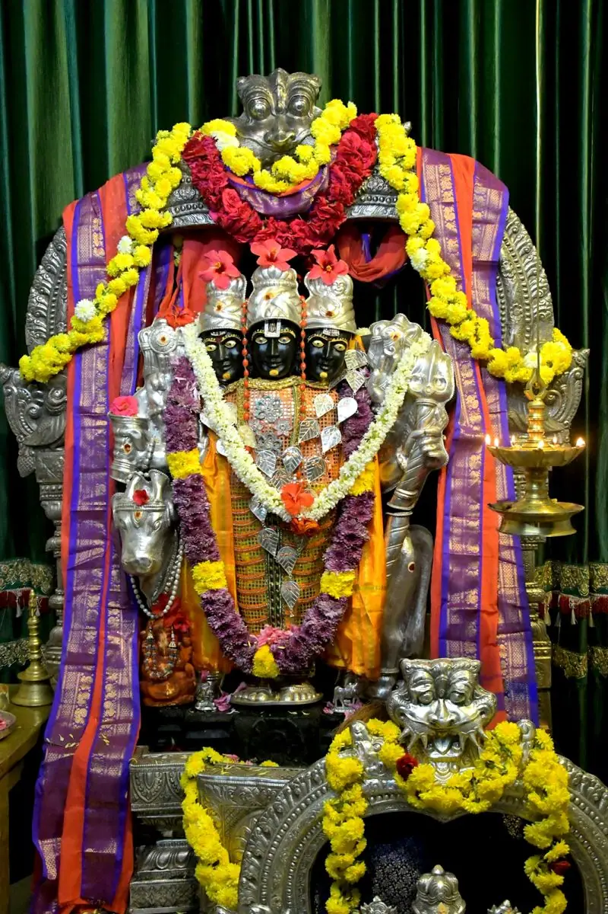

Guru Parampara
The continuous succession of Gurus — from Adi Guru Dattatreya, through Sripada Vallabha and Narasimha Saraswati, to Sri Swamiji, our present Guru.
What is Guru Parampara?
“Guru Parampara” is the combination of two words, Guru and Parampara. As per the sacred text Guru Geeta, the dialog between Lord Shiva and Goddess Parvati, the word “Guru” comprises of two words, “Gu” and “Ru”.
“Gu” represents darkness (ignorance)
“Ru” represents illumination
“Parampara” means “uninterrupted succession”. So, Guru Parampara is the continuous succession or lineage of Gurus.
Guru is like the Sun who swallows up the darkness called ignorance and blesses with illumination.
No one can be at par with the Guru
All scriptures declare emphatically that Guru is the very embodiment of divine and spiritual knowledge (Gnaana). Every seeker needs the guidance of a Guru to progress on the path of the spiritual ladder.
It is not only a customary practice to offer prayers to the lineage of Gurus but also a fundamental duty of a seeker, for no one can be at par with the Guru or is as supreme as Him. Prayer and Pooja to the Guru is performed to offer gratitude to the lineage of Gurus who have bestowed divine wisdom. By doing so, one is blessed with knowledge of the Supreme.
To get rid of the afflictions of one’s mind and to ascend the spiritual ladder, it is a must to seek a Guru in a physical form, serve him with reverence and devotion, and thereby cleanse oneself of sins and impurities.
One must pray to Guru, before and after completion of any work. Without Guru, one cannot reach one’s goal.
The Guru Geeta
Gukaarassyaad gunaateeto roopaateeto rukaarakah
GuIn this context, “Gu” implies He is above all attributes (gunas).
Ru“Ru” implies He is beyond form (roopa).
As He is the absolute Supreme Lord who is beyond traits and form, He has been addressed as Guru.

Lord Dattatreya
According to the determination of Brahma and as a consequence of the great penance of Sage Atri and Anasuya in the Kriya Yuga (the first of the Yugas / eons), Dattatreya, combining all the aspects of the Trinity — Brahma, Vishnu and Shiva — incarnated for the sake of his devotees.
The word “Datta” means the one who has given himself, and since he was born to Sage Atri, he came to be known as Lord Dattatreya. Dattatreya Swami is known as the Guru of Gurus since he was the foremost Guru who promoted and propagated the divine knowledge. Hence He is extolled as “Adi Guru”.
Datta’s incarnation has a unique feature: while other incarnations return to their original abode as soon as their respective tasks are completed, Dattatreya’s incarnation remains permanently on Earth as Guru Murti, exerting an eternal influence.
Jaya Guru Datta — the motto of Avadhoota Datta Peetham, and the greeting devotees share with each other.
The form of the Trinity
Lord Datta has three heads and six hands, with four dogs around Him and Kaamadhenu (cow) and a Kalpavruksha (Audumbara tree) behind Him. The four dogs represent the four Vedas — Rig, Yajur, Saama and Atharvana — while the Kaamadhenu and Kalpavruksha represent wish fulfilment of the devotees.
-
Datta as Shiva
Shula & Damaruga
One hand wields the Shula (trident), which is meant for killing the ego. One more hand holds the Damaruga (drum) to awaken the people who are always in the state of slumber called ajnana (ignorance).
-
Datta as Vishnu
Shankha & Chakra
The Shankha (conch) represents the primordial sound Omkara — when it is blown, avidya (ignorance) vanishes. The Chakra is symbolic of karma, like a round circle with neither a beginning nor an end.
-
Datta as Brahma
Japa mala & Kamandalu
The rosary’s many rounded beads represent the universes in multitude under the Lord’s control. The Kamandalu (water-pot) does not contain ordinary water; it has the nectar of wisdom.
The 24 Gurus of Lord Dattatreya
One prominent story associated with Lord Dattatreya is his preaching to his disciple King Yadu about his twenty-four Gurus of nature, from whom he learned profound lessons about spirituality and life.
Prithvi Earth
Patience and doing good to others in one’s entire life can be learnt from Mother Earth.
-
Patience and doing good to others in one’s entire life can be learnt from Mother Earth.
-
Air is symbolic of the qualities of non attachment and stainlessness.
-
Sky represents the all pervading nature and about the Self that remains uncontaminated by the qualities that arise in the elements forming the body.
-
Water represents purity, smoothness and sweetness, so one should have a pure heart, speak sweet words and be full of love for all beings.
-
Even though fire consumes all things indiscriminately, it does not become unholy, so too, one should have knowledge, should be a tapasvin, be undesirable and remain unaffected by what others offer him.
-
Waxing and waning are only for Moon’s lustre, likewise, the delinquencies of the six senses are of the body only and not of the Atman.
-
Sun absorbs water from Earth with its rays and returns the water to Earth at an appropriate time. Similarly, one should accept the objects of the senses without any enthusiasm for them.
-
A pigeon develops too much attachment or friendship and ends up in affliction. So, attachments lead to one’s downfall and waste of precious lifespan.
-
Like a python, one should forego even sleep and food, and remain firmly devoted to the Self.
-
An ocean does not let even a small leaf to land on its surface, so too one should not allow even the smallest desire or agitation to enter into the mind. Moreover, many rivers flow into an ocean, yet it does not overflow. Likewise, one should not be over joyous when desires are fulfilled or be depressed when they do not materialize.
-
Deluded by the flames of fire and expecting to enjoy comforts, the moth rushes towards the flames and gets burnt. So, man must be careful not to fall a victim to the attractions of a woman or to the delusion caused by the sense organs.
-
A bee gathers nectar from almost every flower, so too one should study all scriptures, skilfully grasp the essence and adapt it in the search for the Self.
-
Although elephant is very strong and intelligent, it gets trapped due to its lustfulness. So too, one should know that lust is dangerous.
-
The honey-thief contrives and steals the honey that is hoarded by honey bees. Therefore, if a person is stingy and hides his wealth without enjoying it himself or allowing others to share it, he risks being robbed by someone.
-
The hunter’s music makes the innocent deer to stand still and listen with closed eyes. Sage Rushyashrunga became a victim of a dancing girl attracted to her music and dance. So too, one should not be beguiled by music or dancing.
-
The uncontrolled tongue of a fish makes it the prey of the fisherman’s hook. Therefore, a fish teaches that controlling and conquering the tongue is very important.
-
Pingala, a harlot, attained marvellous tranquility, peace of mind and a sound sleep by giving up the desire for wealth and lustful pleasures. So, desire is sorrow and absence of wants is the highest happiness.
-
A little bird holding a bit of meat gets attacked by a bigger and stronger bird. When the bird drops the meat, the other bird follows to get the meat piece. So too, if one keeps a thing coveted by others, one will be subjected to severe anguish and therefore it is wise to give up such things voluntarily.
-
A little child is worry-free and is always happy playing by himself. One should also remain happy like a child.
-
When a maiden pounds the paddy, her bangles make jingling sound. To avoid any sound, she retains only one bangle on each wrist. Likewise, quarrels ensue when too many persons gather in one place.
-
An arrow-maker has utmost concentration in making arrows. Likewise, one should sit with total focus and practice Yoga.
-
A serpent is always vigilant and is never absent-minded. Unlike a man, a snake does not waste its time building a shelter and happily lives in an ant-hill deserted by ants.
-
A spider stirs the threads in its stomach and with that material weaves its web, plays with it and finally swallows it. The process of creation also is akin to a spider’s web.
-
Like how the form of an insect that stares hard at a dragon-fly undergoes a change, so too, one attains the form of those on whom one concentrates the mind completely. If a small insect can transform its body, even a man possessing intellect and the faculty of meditation and concentration can be certainly liberated.
The essence of Universal Brotherhood
Lord Dattatreya’s teachings promote detachment from material desires and ego. He has preached the essence of Universal Brotherhood in these simple sentences:
A golden thread of Gurus
Lord Datta assumed many forms in the course of time according to the period, place and circumstances, and lifted his devotees to his own heights. No one knows the number of manifestations Datta assumed; some of his incarnations, like Sripada Vallabha and Narasimha Saraswati, are quite prominent.

Sri Ganeshaya Namaha | Sri Saraswatyai Namaha | Sri Pada Vallabha Narasimha Saraswathi Sri Guru Dattatreyaya Namaha |
The Datta Peetham’s Guru Parampara prayer begins with salutations to Lord Ganapathy, the remover of all obstacles, then to Mother Saraswathy, the Goddess of knowledge, followed by the lineage of Gurus starting from Sri Pada Vallabha and Narasimha Saraswathi, the incarnations of Lord Dattatreya, up to the present Guru — who is none other than Sri Swamiji.
-
 Kriya YugaThrough the penance of Sage Atri and AnasuyaKriya Yuga Adi Guru · Guru of Gurus
Kriya YugaThrough the penance of Sage Atri and AnasuyaKriya Yuga Adi Guru · Guru of GurusLord Dattatreya
Dattatreya Swami is the Supreme God who is an incarnation of the Trinity — Brahma, Vishnu and Shiva. He is known as the Guru of Gurus since he was the foremost Guru who promoted and propagated the divine knowledge.
Lord Dattatreya (or Datta) takes on several incarnations time and again to uplift his devotees.
Adi Guru Dattatreya -
As Kali Yuga began
He goes himself to his devotees if they cannot reach him and for those who cannot climb to his heights, he comes down to their level.
-
 Sri Kshetra PithapuramOn the east coast of Godavari, Andhra PradeshSri Kshetra Pithapuram First manifestation of Lord Datta
Sri Kshetra PithapuramOn the east coast of Godavari, Andhra PradeshSri Kshetra Pithapuram First manifestation of Lord DattaSripada Vallabha
The child had impressions of Shanka and Chakra in his feet, hence he was called “Sripada”. He was born to a pious Brahmin couple, Appala Raja and Sumati, in Sri Kshetra Pithapuram.
He went to Kashi, Badrinath and Kedarnath, imparting Gnaana to the saints, and finally retired to Kuruvapur, an island in the river Krishna. His teachings emphasize the importance of devotion, selflessness, and self-realization.
-
 KaranjaMaharashtraKaranja Second incarnation of Lord Dattatreya
KaranjaMaharashtraKaranja Second incarnation of Lord DattatreyaNarasimha Saraswati
Narasimha Saraswati is believed to have been born to the saintly couple Madhava Sharma and Amba-Bhavani Kale in Karanja village in Maharashtra, India.
Initially named Narahari, he later came to be known as Narasimha Saraswati, a name symbolizing his role as the dispeller of human sins and miseries.
-
 Sogala, 1923Ramanagara district, KarnatakaSogala, 1923 Mother and first Guru of Sri Swamiji
Sogala, 1923Ramanagara district, KarnatakaSogala, 1923 Mother and first Guru of Sri SwamijiSri Jayalakshmi Maata
Sri Jayalakshmi Maata was the Mother and spiritual Guru of Sri Swamiji. She imparted spiritual training to Sri Swamiji in his childhood, bestowed Sri Vidya and Raja Yoga and explained the esoteric meanings of scriptures like the Vedas, Puranas, Mahabharata, and Ramayana.
Her life & teachings -
 Mekedatu, 26 May 1942Karnataka, IndiaMekedatu, 26 May 1942 Sri Guru · Avadhoota Datta Peethadhipati
Mekedatu, 26 May 1942Karnataka, IndiaMekedatu, 26 May 1942 Sri Guru · Avadhoota Datta PeethadhipatiSri Ganapathy Sachchidananda Swamiji
As part of the Guru Parampara prayer, “Sri Guru”, our present Guru and Avadhoota Datta Peethadhipati Jagadguru Sri Sri Sri Ganapathy Sachchidananda Swamiji, should be contemplated upon.
In 1966, Sri Swamiji moved to the present site of the Mysuru Ashram on Ooty Road, which in the early days was only a straw hut in a field.
His life and mission -
Mysuru, 14 January 1977Junior Pontiff since 29 May 2004Mysuru, 14 January 1977 Junior Pontiff · Sri Bala Swamiji
Sri Datta Vijayananda Teertha Swamiji
Fondly referred to as Bala Swamiji by the devotees, he was named Sri Harsha Sharma and had his Vedic education in the SGS Veda Pathashala, Mysuru.
On 29th May, 2004, Sri Harsha Sharma was anointed as the Junior Pontiff of Avadhoota Datta Peetham and given the Sannyasa Deeksha name “Sri Datta Vijayananda Teertha”.
About Sri Bala Swamiji

Sri Jayalakshmi Maata
Sri Swamiji’s revered mother and Guru for Sri Vidya and Raja Yoga.
Jayalakshmi Maata was born to a pious Brahmin couple, Linganna and Savitramma, as their fourth child in 1923 at Sogala village, Ramanagara district of Karnataka — in the month of Visakha, on the fifth day of the brilliant fortnight, the day on which Adi Shankaracharya was born. She was a special child with a spiritual fervor.
She worshipped Ganapathy and lived with her family at Mekedatu, in the sacred woods near Sangama, at the confluence of the rivers Kaveri, Arkavati and Gupta Gamini. One day she experienced a communion with Lord Datta in a cave among the holy hills near Mekedatu. Lord Datta told her that He would be born as her son to propagate Truth in the world.
- Her Gurus
- Fakir Taata, a Muslim saint, and Kara Paatra Swami
- Her husband
- Gandluru Narasimha Sastry, later Sri Narahareeshwara Swami
- Mahasamadhi
- On Shankara Jayanti in 1953
- Aradhana
- Vaishaakha Panchami, every year
When I came to accept this auspicious and ancient institution (marriage), I found that each work I did in my house was a spiritual exercise. Cooking or cleaning the utensils and drains in and around the house was also upasana (spiritual practice) to me.
The twelve commandments
In the Nandana year, child Satyanarayana (Sri Swamiji) was initiated by His Guru, Jayalakshmi Maata, into Sri Vidya and various other disciplines. She set the tone for the mission of Dharma which He had to establish, and gave Him the most significant Dwadasha Sutras for spiritual practice.
- 01
See Me in all women.
- 02
Be compassionate to the poor and socio-economically backward people.
- 03
In all situations think and act according to the Shastras.
- 04
Protect the pious and the virtuous even at the cost of your life.
- 05
Consider all forms of life as equal. Do not discriminate.
- 06
Do not miss your daily disciplines at any cost — it should not inconvenience others. It should always benefit others.
- 07
See Me in all forms of life.
- 08
Do not ever stray from the Truth.
- 09
Develop the skill of simplifying your knowledge, and spread it among the masses.
- 10
Do not reveal your future incarnations.
- 11
Undertake the task of spreading Dharma in a lucid manner.
- 12
Lead your life without hurting others even if it means hurting yourself.

Sri Jayalakshmi Maata Aradhana
At the tender age of eleven, Jayalakshmi Maata transmitted spiritual energy to child Satyanarayana in the Anjaneya Temple at Bommeparti, where he experienced a vision of her as the Divine Mother, Rajarajeshwari. She attained Mahasamadhi on Shankara Jayanti in 1953, shortly after initiating Sri Swamiji into spiritual practices.
Sri Swamiji fervently worships Jayalakshmi Maata every single day, and conducts special rituals every year on her Aradhana day, Vaishaakha Panchami. He also conducts the Narahari Teertha Swami (Narasimha Sastry) Aradhana every year in the lunar month of Sravana — a clear message that parents should always be taken care of and worshipped.
Guru Purnima & the Guru Parampara Pooja
On the very auspicious day of Guru Purnima, which occurs on Ashaadha Purnima (also called Vyasa Purnima) as per the lunar calendar, the Guru Parampara is specially worshipped. As part of this sacred worship, there is also a tradition of worshipping all the Gurus in the lineage of one’s own Guru.
The Guru Parampara Pooja on Guru Purnima day involves worshipping the ancient lineage of Gurus along with the present Guru Parampara:
- 01
Sadguru
श्री स्वामीजी
- 02
Parama Guru
Sri Jayalakshmi Maata
- 03
Parameshti Guru
Sri Narahareeshwara Swami
- 04
Paraatpara Guru
Karapaatra Yateeshwara Swami
The Chaturmasya Vrata Deeksha begins
As a mark of reverence and gratitude to the Datta Guru Parampara, Sri Bala Swamiji commences the Chaturmasya Vrata Deeksha every year from Guru Purnima, after performing the sacred Guru Parampara Pooja and Vyaasa Pooja. Chaturmasya is an observance of ahimsa (non-violence); his discourses during this period disseminate knowledge and kindle spiritual passion in the listeners.
Datta Charitram
Discourses by Sri Swamiji on “Datta Charitram”, in the Telugu language — 10 episodes.
 Datta Charitram · Episode 1
Datta Charitram · Episode 1
Episodes 10 discourses · Telugu
- Episode 1Datta Charitram
- Episode 2Datta Charitram
- Episode 3Datta Charitram
- Episode 4Datta Charitram
- Episode 5Datta Charitram
- Episode 6Datta Charitram
- Episode 7Datta Charitram
- Episode 8Datta Charitram
- Episode 9Datta Charitram
- Episode 10Datta Charitram
Jaya Guru Datta
Offer gratitude to the lineage of Gurus who have bestowed divine wisdom — with a puja at the Ashram, or by following Sri Swamiji’s life and teachings.